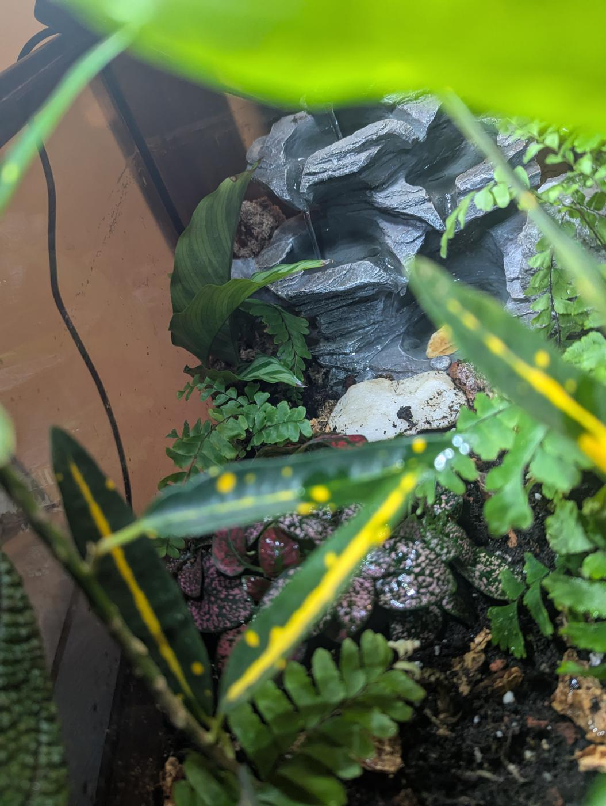
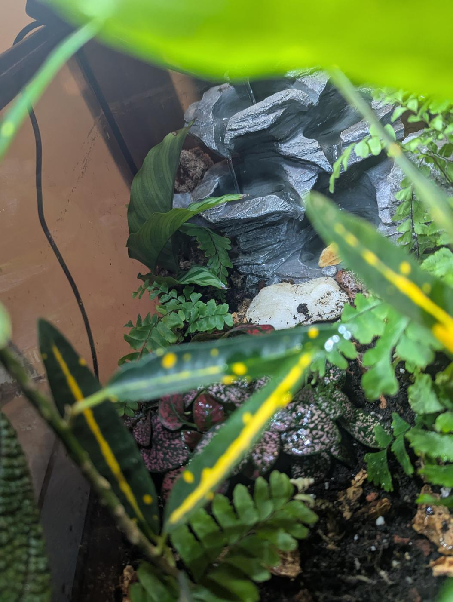
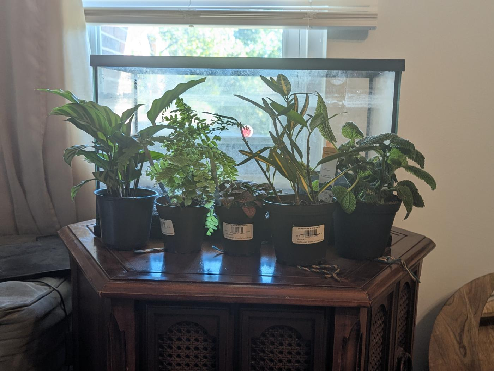
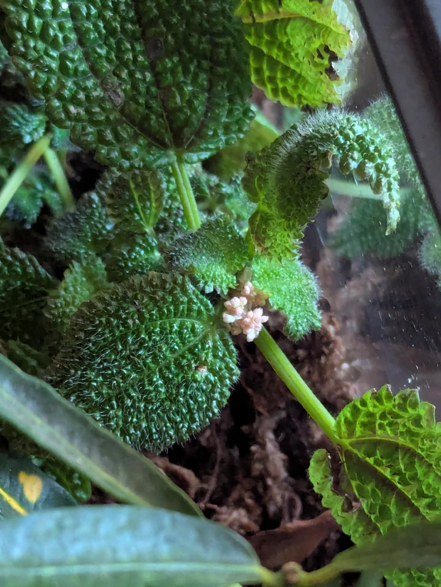

9/29/2025
Flora


I got my plants in the terrarium! I needed to get them in this past weekend since I’ll be without them for a week, which will give the terrarium time to establish. Establishing a terrarium can be a turbulent experience; in fact, it’ll probably take around a year to see the actuality of what’s working in the terrarium and what hasn’t. Ideally, all of the plants explode in growth and give me more work in the form of trimming and removing some. Worst case scenario, they all die and I’ve wasted around $15.

I tried to pick plants that both work well for a terrarium while also being more accurate to theories about the climate, which was warm, forested and considered subtropical. However, two of the plants I chose were extremely biased: A Calathea and a Moon Valley Pilia.
I got the Calathea from a school event; there was a table outside one of the buildings filled to the edges with common household plants. I chose one that I both liked and felt could work in the high humidity terrarium.
When picking out the other plants, my partner found a Moon Valley Pilia and took a liking to it, so while it’s not quite as accurate as a pick, I’m dedicated to keeping it alive. In fact, doing research about it, it is presumably a plant that would thrive in a terrarium like this, so we will see how it does. While it’s more desired for its leaf texture, I hope that I can get it to bloom since I’ve heard that it’s difficult to do so when it’s in an indoor environment. If it does bloom, I will take it as a sign of success regarding the substrate I created for it.
Unfortunately though, the spray bottle I picked out to simulate mist and rain was NOT that, so until I get a proper one it will look like I’m shooting my plants with a pistol.
(UPDATE: When I got home, the Moon Valley Pilia was flowering :D)
